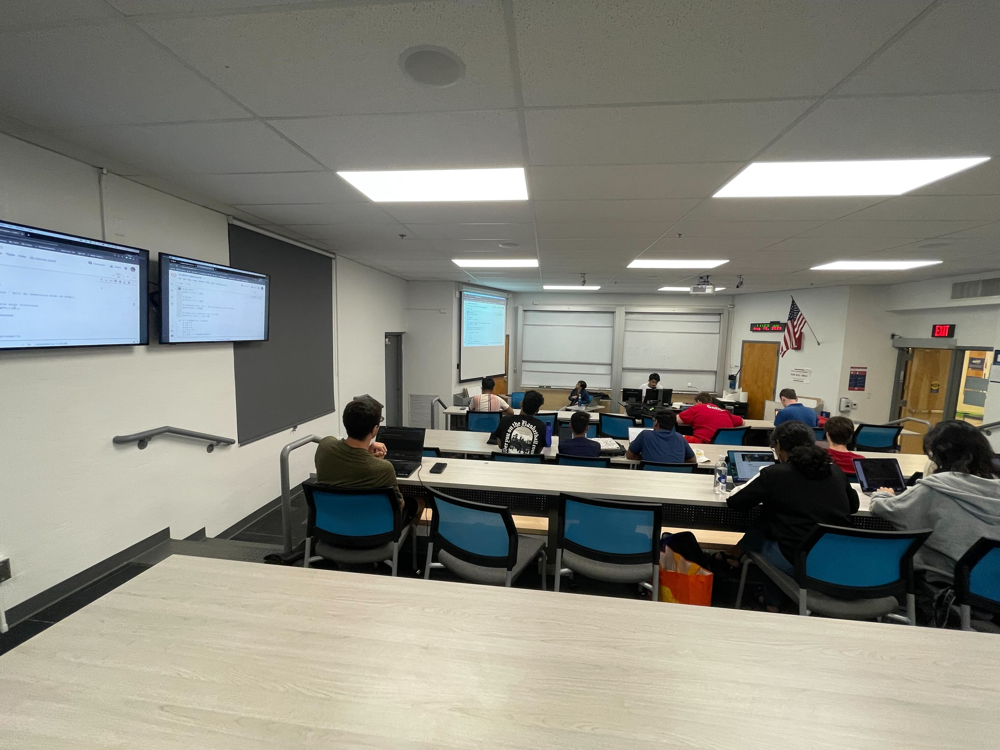

Teaching/Mentorship
I am passionate about developing programs that increase undergraduate student success in astrophysics research. I currently focus on two aspects of this: 1. training students with fundamental technical skills for research, and 2. providing mentorship and a support structure to create sustainable success and increase retention of underrepresented groups.
I have taken leadership roles in several programs at the University of Arizona, including the Computational and Mathematical Program for incoming Arizona Science Students (COMPASS) and the TIMESTEP Research Apprenticeship program. I have also been the Teaching Assistant for Astro 300A: Dynamics and Astro 202: Life in the Universe.
COMPASS: Computational and Mathematical Program for incoming Arizona Science Students
[Website]
[Github]
In its first two iterations, COMPASS was a week-long workshop for incoming Arizona Science students to learn fundamental programming and computational skills needed for success in research and coursework. As a co-organizer and instructor, I developed the Python and data visualization aspect of the curriculum by designing work-along jupyter notebooks and leading several sessions on Python programming, data analysis, and visualization.
You can find interactive Python notebooks I developed on Python basics and Numpy and Matplotlib.

TIMESTEP Research Apprenticeship
[website]
Graduate Student Coordinator of the Research Apprenticeship program, a mentorship program that provides second year undergraduates with a paid opportunity to build technical and professional skills applicable to both research and industry careers. The program matches students with faculty research advisors to conduct research over the academic year, and provides mentorship and professional/technical development workshops to lower barriers to entry into research.
As a graduate student coordinator, I develop educational presentations, worksheets, and python notebooks, lead weekly hands-on workshops, provide one-on-one mentorship, and collaborate with faculty advisors and the TIMESTEP leadership team to continuously improve the program. To date, I have mentored 38 undergraduate students, many of whom have gone on to write first-author publications, join prestigious REU programs, and work at national labs, such as JPL and FermiLab.
Here are some of the materials I have developed for the program:
-
Introduction to Git and Github. Introducing students to the fundamentals concepts in Git and version control. Co-developed with Eden McEwen.
-
Introduction to Bash. A work-along worksheet introducing basic bash commands and scripting aimed at 2nd year undergraduates with little to no prior programming experience.
-
Python basics and Numpy and Matplotlib. Interactive python notebooks (hosted on Collab) introducing fundamental python programming concepts, numpy arrays, and data visualization with matplotlib.
I received the Graduate Student Award in Teaching from the Department of Astronomy in 2025 for my work with TIMESTEP.
Astro 300A: Dynamics
[lecture 1] [lecture 2]
Teaching Assistant for Professor Kate Daniel in Spring 2025 and Spring 2026. As the TA, I held office hours, updated and graded all homework assignments, and provided feedback on over 25 students' solutions.
I designed and gave two lectures connecting the class material to my current research on supermassive binary black holes. The first lecture covered dynamical interactions that drive the inspiral of supermassive binary black holes: I walked them through an order-of-mag estimate of dynamical friction timescales and compared it to the gravitational wave inspiral timescale. The goal was to demonstrate how professional astrophysicists gain intuition for complicated systems. The second lecture covered the methods I use in my current research. The goal was to demonstrate how research is performed (in one specific method) at the forefront of the field.
Astro 202: Life in the Universe
Teaching Assistant for Professor Laird Close in Fall 2025. I held weekly office hours and wrote and graded five in-class quizzes.